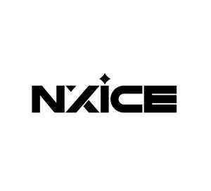

Trade Mark Journal No.2025/030 25 July 2025
UK00004233963 15 July 2025 (3,8,11,20)

- Class 3
- Cleaning, polishing, scouring and abrasive preparations; soaps; perfumery; essential oils; cosmetics; hair lotions; dentifrices; deodorants; bath and shower gels; hair shampoos; conditioners; mousses; gels; pomades; waxes; creams and lotions; hair setting lotions; hair sprays; permanent wave preparations; cosmetics; cosmetics products for the care of hands, nails, artificial nails and feet; nail polish; nail polish removers; nail varnish; nail-art varnishes for cosmetic purposes; false nails; adhesives for nail art; hybrid gel nail colour; hybrid gel top and base coats; hybrid gel nail polish; acrylic nails; nail treatment gels; nail care preparation; nail pencils; nail corrector pens; nail moisturisers; nail decorations being, glitter powder, cosmetic acrylic powder, cosmetic pigments, cosmetic UV gels, cosmetic gels, nail manicure products (cosmetics), nail care preparations, nail making, mending and strengthening powders and liquids, nail making, mending and strengthening gels, nail tips, preformed nail tips and adhesives therefor; nail cleansers, dehydrators and primers; abrasive boards; nail finishes including base coats, polishes and top coats, and removers therefor; cuticle oils; pumice stones; nail wax; wax for hair removal; Brazilian wax; hard wax; pre wax lotion; after wax lotion; adhesives for affixing artificial eyelashes, eyebrows, hair and nails; artificial eyelashes; cosmetic preparations for use on the eyelashes and eyebrows; cosmetic products for eyelashes and eyebrows; eyelash and eyebrow tinting preparations; cotton wool for cosmetic purposes; cotton sticks for cosmetic purposes; aloe vera gel; cleaning preparations; polishing preparations, parts.
- Class 8
- Hand tools and implements (hand-operated); cutlery; side arms; razors; nail files; polishing files; nail scissors; manicure equipment, in particular pincers, sticks, cuticle clippers, tip cutters, nail clippers, tip clippers, cuticle nippers, cuticle knives, cuticle pushers, gem drills, rosewood sticks, manicure sticks; hand-operated tools and implements for fingernail care and fingernail design; hand-operated tools for nail design; manicure tools; polishing files; electric filing apparatus; nail buffers; nail nippers; manicure sets; pedicure sets; nail drills.
- Class 11
- Apparatus for lighting, heating, steam generating, refrigerating, drying, ventilating; lamps; ultraviolet lamps; ultraviolet ray lamps, not for medical purposes; lamps for curing nail making, mending, or strengthening gels; UV hardening lamps for hardening UV gels and paste creams; lamps for the purposes of drying nails; nail ovens; Electric lamps; apparatus for drying; Installations for lighting and drying; heaters; wax heaters; LED nail lamps; parts and fittings for the aforesaid goods.
- Class 20
- Castors; Chairs with castor wheels; Footrests; Wheels (Non-metallic -) for beds; Legs for furniture; Wooden shelving [furniture]; Chair legs; Footstools; Foot stools; Metal shelving; Armrests.
NXICE LTD